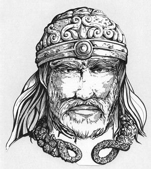

Forums galactiques > Assemblée Galactique : diplomatie officielle > De sincère salutation ...
Pages : 1
| Kelmonad Respect diplomatique : 8  06/06 ETU 00:13 | Score : 8 Détails Une flottille de vaisseau arriva autour de la planète mère des nombreux systèmes existant dans cette Galaxie ; mais ces vaisseaux n'étaient pas d'une forme connue. Ils étaient long, très long, fuselés diraient certains, et pouvaient atteindre des vitesses vertigineuses.
Au premier abord, leur couleur marron clair pouvait faire penser à un bois. Mais après mûre réflexion, l'on pouvait remarquer que ce n'était que des peintures, tentant de représenter cet aspect. Sur ces coques fuselées et longues, des rames sortaient, de part et d'autre de la coque. Enfin, ce que l'on croyait être des rames. Il s'agissait en fait de canon, multiple et nombreux, assurant la sécurité du vaisseau. Enfin, sortant au dessus de cette espèce de tube, couvert de piquant plus menaçant les uns que les autres surgissaient un mat, portant une grande voile. Voile fonctionnant avec les photons solaires, permettant de se déplacer dans l'univers. Si des Historiens étaient présent, nombreux aurait été a penser que ces vaisseaux ressemblaient étrangement à des vaisseaux d'un autre temps, d'autres peuplades ... Mais cela, c'est encore une autre histoire ... Les vaisseaux arrivèrent enfin à se poser. Une escadre d'homme en sortit, vêtu de manière rustre, selon les habitants de Newdeun, capitale galactique; peau de bête, associé à des boucliers en duracier, sans oublier une espèce d'épée, pendouillant à la ceinture. La dizaine d'homme s'engouffra dans le bâtiment luxuriant, pour finalement débarqué dans un gigantesque hémicycle, ou des dizaines de races, de créatures plus ou moins différentes siégaient. Un homme s'écarta du groupe, et s'avança au centre de l'assemblée. Il était légèrement plus grand que les autres, et sa barbe, finement taillé, laissé voir un homme d'un âge mur, pour ne pas dire d'un âge certain. Son casque luisait, ainsi que sa drôle d'épée, à sa ceinture ... Il s'inclina profondément, avant de commencer à parler ... Peuplade d'Origine, je tenais à vous dire bonjour, et à vous faire passer les sincères salutations de mon peuple, les Northmann ... Nos peuples viennent des lointaines contrées de la Galaxie, situé dans la bordure extérieure. Je me nomme Kelmonad, et je suis le représentant en diplomatie et en politique de cette derniere ... Nous sommes un peuple de l'eau, de la glace, et du froid. Nous sommes également un peuple pacifiste, mais guerrier quand l'heure et l'orage se fait sentir. Je tenais à m'informer personnellement des dernières nouveautés et des dernières coalitions de cette noble assemblée. Notre peuple aimerait engager des traités de cohabitation et de pacification ... Je voulais également savoir quel était le mode de gouvernement actuel de cette assemblée. Étant tout à fait nouveau en ces lieux, j'espère ne point vous importuner, et c'est avec une impatience non dissimulée que j'attendrais vos réponses ... Le jeune chef du Nord se plaça en retrait de l'assemblée, et attendit qu'une personne prenne la parole. Son peuple avait déjà connu cet endroit, il y a longtemps, mais suite a des crises internes, nous avions du nous replier sur nous même, afin de les résoudre ... Aujourd'hui, il était temps de recommencer à nouer contact ... |
Pages : 1
Forums galactiques > Assemblée Galactique : diplomatie officielle > De sincère salutation ...